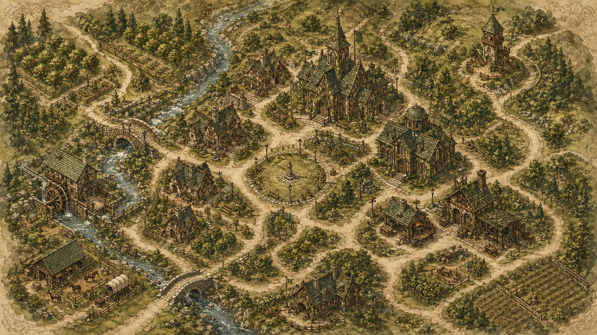

Orchard Vale does not announce its kindness. It practices it in small, repeatable ways: a swept path after rain, a basket returned with a note tucked under the handle, a shopkeeper who remembers that you prefer pears that are still a little firm.
The town sits in a low green fold between orchard hills and a clear-running stream. From a distance it looks almost arranged by a careful hand: cottages gathered near the bridge, the guildhall watching over the square, gardens stepping down toward the watermill. Up close, the order softens. You hear hinges, bells, pages turning, and neighbors calling greetings across narrow lanes.

Friendliness As Civic Craft
In Orchard Vale, friendliness is treated less like a mood and more like a craft. The notice board is kept current. The library desk leaves blank cards for questions. The market green has benches where no one is expected to buy anything. A visitor who looks lost is not rushed; they are walked to the corner where the next landmark becomes obvious.
Introductions Are Generous
Names are offered with context, not status. People explain who can help, where to go, and when the kettle is likely to be on.
News Travels Kindly
Messages arrive with enough detail to be useful and enough warmth to feel human.
Questions Are Welcome
The town has a strong preference for patient answers, clear maps, and not making anyone feel foolish for asking.
Three Voices From The Vale
There is a way to be efficient without becoming cold. We try to practice that.
The calendar matters, but so does noticing when someone needs a slower morning.
Good records are a form of hospitality. They spare the next person confusion.
If You Visit
Arrive by the orchard road if you can. It gives the town time to appear gradually: first the watchtower, then the mill wheel, then the bridge stones warmed by the afternoon. By the time you reach the square, someone will likely have noticed you. That is not surveillance in Orchard Vale. It is welcome.
A Good First Stop
The notice board near the green carries market hours, library gatherings, repair offers, and invitations to share surplus fruit. The papers are blank in this demo so real HTML can supply live town notes later.
Return to the hill view